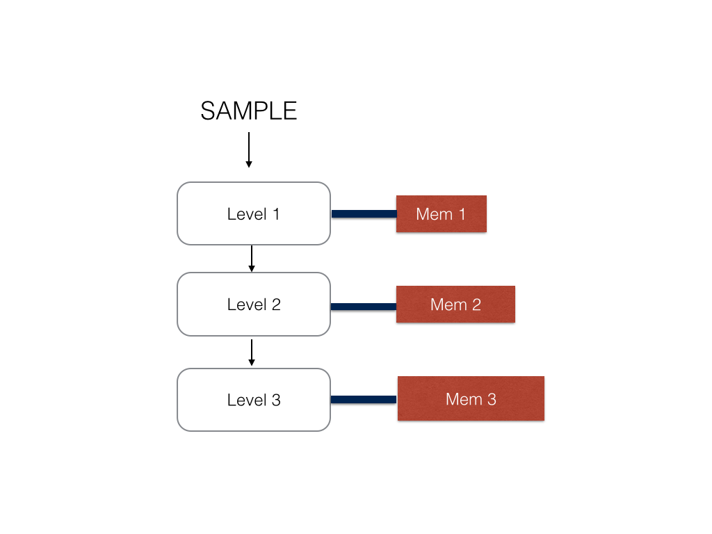
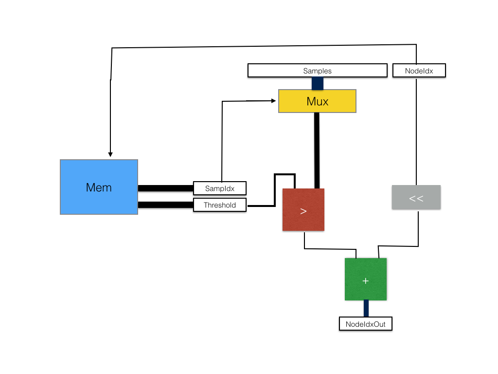

Random Forest Classification on an FPGA
15418 Final Project Site by Vivek Krishnan
Project maintained by vrkrishn
On this page I will discuss some of the design choices for the implementation of my FPGA classification algorithm
Decision Tree
 For this implementation, I will define a decision tree as a tree with s levels. Such a tree has branch nodes, at which a sample data
is compared to a threshold and a path accordingly taken, as well as leaf nodes at which the final result is calculated and sent to the
analysis unit. Laid out in memory, the decision tree can be represented as a large array of size [(5 * 2 ^ s - 2) * sizeof(data)]. There are 2 ^ s - 1
branch nodes which each take up 2 data slots of memory. There are also 2 ^ s leaf nodes which each take up 3 data slots of memory. My system
is implemented such that all trees have the same number of branch and leaf nodes such that indexing into a tree in the forest is
straightforeward. A possible modification to emphasize scalability would have an array of indices into the tree that represent where each tree starts; this system
could allow for trees that don't uniformly branch out.
For this implementation, I will define a decision tree as a tree with s levels. Such a tree has branch nodes, at which a sample data
is compared to a threshold and a path accordingly taken, as well as leaf nodes at which the final result is calculated and sent to the
analysis unit. Laid out in memory, the decision tree can be represented as a large array of size [(5 * 2 ^ s - 2) * sizeof(data)]. There are 2 ^ s - 1
branch nodes which each take up 2 data slots of memory. There are also 2 ^ s leaf nodes which each take up 3 data slots of memory. My system
is implemented such that all trees have the same number of branch and leaf nodes such that indexing into a tree in the forest is
straightforeward. A possible modification to emphasize scalability would have an array of indices into the tree that represent where each tree starts; this system
could allow for trees that don't uniformly branch out.
The way that memory is laid out for a tree, the index of the left child of a node is simply (nodeIdx << 1) while the node index of the right child is simply (nodeIdx << 2 + 1).
The naive implementation of the tree is to create node logic for every node in the tree. However, in this setup, the amount of routing logic used by the tree will grow exponentially with respect to the depth of the tree. In addition, we can only perform action at one node in each level at any given time because of the dependencies of the tree.
 Therefore, I decided to instead represent each level of the tree as a stage and store the values for each node in an appropriate stage memory for each level of the tree. The SRAM memory banks on the FPGA are dual port at max so I could not achieve both one cycle memory access and a coagulated bank of memory. Therefore, the memory at each stage is a different memory module which is hooked up to the stage logic with a memory controller.
There modifications reduce the routing logic on the FPGA tree to about linear compared to the depth of the tree. In this version of the tree, the node index is passed in from the top of the tree and will shift either to the right or left based on which direction the sample has to go.
Tree Node Design
 For each internal node, the input to the module will be a sample set, an index of a node in the current decision tree, the current decision tree, as well as a valid bit to determine if the register values are ready for comparison, as well as the recieve lines for the modules that are dependent. The outputs of the module are receive lines when recieving data, an output nodeIdx, the sample for the next node to the right, and valid lines for both sample and nodeIdx.
First, the memory controller finds the node with index (treeIdx * NODES_PER_TREE + nodeIDX) and outputs the corresponding threshold and sample index value. The sampIdx is used to select one of the samples from the array of sample data using a mux. The output of this mux is compared against the threshold calue outputed by the memory controller. The result of this comparison is added to the shifted nodeIdx to get the appropriate child node to traverse to.
Assuming that memory access takes one cycle, the passage of a sample and node through this stage is one cycle.
Forest Design and Perpendicular Pipelines
For each internal node, the input to the module will be a sample set, an index of a node in the current decision tree, the current decision tree, as well as a valid bit to determine if the register values are ready for comparison, as well as the recieve lines for the modules that are dependent. The outputs of the module are receive lines when recieving data, an output nodeIdx, the sample for the next node to the right, and valid lines for both sample and nodeIdx.
First, the memory controller finds the node with index (treeIdx * NODES_PER_TREE + nodeIDX) and outputs the corresponding threshold and sample index value. The sampIdx is used to select one of the samples from the array of sample data using a mux. The output of this mux is compared against the threshold calue outputed by the memory controller. The result of this comparison is added to the shifted nodeIdx to get the appropriate child node to traverse to.